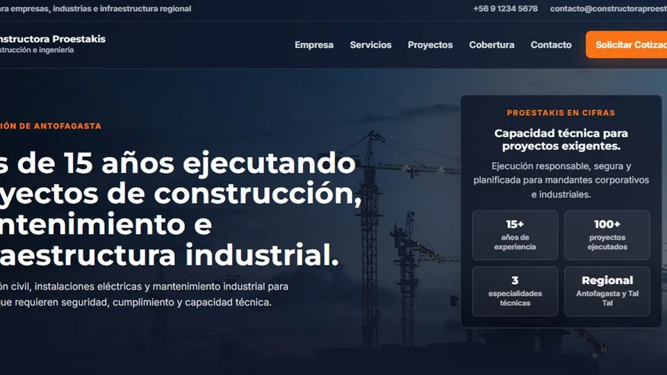

Dependencia de redes sociales
El negocio no cuenta con un canal propio donde controlar su información, propuesta y contacto.
Producto ISM · Presencia digital
Una solución de presencia digital profesional que se adapta al rubro, marca y objetivos de cada cliente. Puede comenzar como un sitio web claro y evolucionar hacia reservas, formularios, paneles privados, automatizaciones e integraciones.

Problema → solución
El producto se configura según la forma real en que trabaja cada negocio.
El negocio no cuenta con un canal propio donde controlar su información, propuesta y contacto.
El contacto depende de mensajes aislados y no existe una ruta clara desde el interés hasta la acción.
El negocio tiene poca base técnica para ser encontrado, entendido y evaluado desde buscadores.
La presencia digital queda limitada cuando luego se necesitan agenda, formularios, catálogos o paneles.
Capacidades
Implementamos lo que aporta valor y dejamos la arquitectura preparada para evolucionar.
Para quién está pensado
Presencia corporativa y captación profesional.
Servicios, agenda y contacto desde un canal propio.
Catálogo, información y conexión con ventas.
Una base profesional preparada para crecer.
Implementación
Entendemos negocio, servicios, público y objetivo comercial.
Definimos contenido, navegación, llamadas a la acción e integraciones.
Construimos la solución, adaptamos identidad y validamos responsive.
La misma base puede incorporar nuevos módulos cuando el negocio lo requiera.
Implementaciones y validación
Los clientes aparecen como casos cuando corresponde; el producto conserva una identidad propia de ISM Developer.
Revisamos tu contexto, definimos el alcance inicial y adaptamos la solución a tus procesos, usuarios y objetivos.